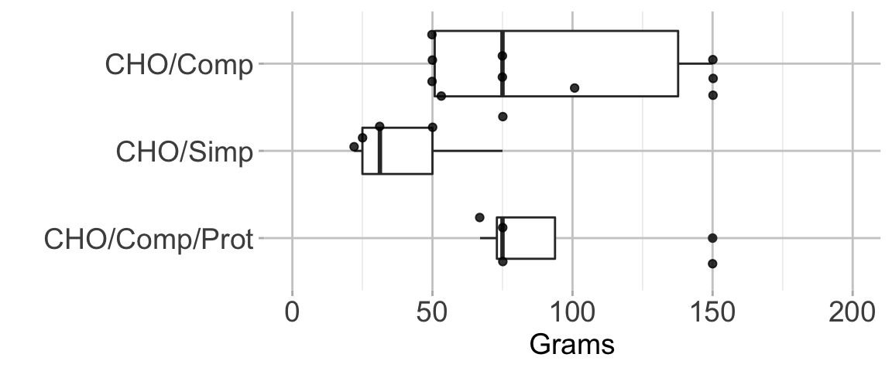

Network Meta-Analyses — Carbohydrates
16 May, 2021 (09:25)
Last updated: 2021-05-16
Checks: 7 0
Knit directory: Fasting/
This reproducible R Markdown analysis was created with workflowr (version 1.6.2). The Checks tab describes the reproducibility checks that were applied when the results were created. The Past versions tab lists the development history.
Great! Since the R Markdown file has been committed to the Git repository, you know the exact version of the code that produced these results.
Great job! The global environment was empty. Objects defined in the global environment can affect the analysis in your R Markdown file in unknown ways. For reproduciblity it’s best to always run the code in an empty environment.
The command set.seed(20201201) was run prior to running the code in the R Markdown file. Setting a seed ensures that any results that rely on randomness, e.g. subsampling or permutations, are reproducible.
Great job! Recording the operating system, R version, and package versions is critical for reproducibility.
Nice! There were no cached chunks for this analysis, so you can be confident that you successfully produced the results during this run.
Great job! Using relative paths to the files within your workflowr project makes it easier to run your code on other machines.
Great! You are using Git for version control. Tracking code development and connecting the code version to the results is critical for reproducibility.
The results in this page were generated with repository version b780d04. See the Past versions tab to see a history of the changes made to the R Markdown and HTML files.
Note that you need to be careful to ensure that all relevant files for the analysis have been committed to Git prior to generating the results (you can use wflow_publish or wflow_git_commit). workflowr only checks the R Markdown file, but you know if there are other scripts or data files that it depends on. Below is the status of the Git repository when the results were generated:
Ignored files:
Ignored: .DS_Store
Ignored: .Rhistory
Ignored: .Rproj.user/
Untracked files:
Untracked: _@@/Carbohydrate Drinks.html
Untracked: _site.yml_back
Untracked: all_arms.csv
Untracked: analysis/.gitignore
Untracked: analysis/american-medical-association.csl
Untracked: analysis/anesthesiology.csl
Untracked: analysis/cho.bib
Untracked: analysis/gum.bib
Untracked: analysis/gum.ris
Untracked: analysis/jama.csl
Untracked: analysis/protein.bib
Untracked: cho_amts.csv
Untracked: cho_refs.csv
Untracked: code/a_temp_to_run.R
Untracked: code/anchors_cho.txt
Untracked: code/anchors_prot.txt
Untracked: code/bayes_sensitivity.R
Untracked: code/bugsnet_test_script.R
Untracked: code/calc_mn_sd_med_iqr_range.R
Untracked: code/calculations.R
Untracked: code/cho_010420.Rmd
Untracked: code/cho_nausea.R
Untracked: code/createCinemaFile.R
Untracked: code/discard.R
Untracked: code/fasting_descriptive.R
Untracked: code/functions.R
Untracked: code/helpers.R
Untracked: code/hrs.R
Untracked: code/metaHungerClear.R
Untracked: code/nma_debug_copy.R
Untracked: code/nma_sensitivity.R
Untracked: code/protein_012621.Rmd
Untracked: code/robGum.R
Untracked: code/rob_021121.R
Untracked: code/rob_protein.R
Untracked: code/rob_summary.R
Untracked: code/rob_traffic_light.R
Untracked: code/rob_traffic_light_mg.R
Untracked: code/snips.R
Untracked: code/timePlot.R
Untracked: data/CHOComplicationList_012521.xlsx
Untracked: data/CHOProteinDetail_031021.xlsx
Untracked: data/GumOutcomes_102820.xlsx
Untracked: data/ProteinSOE_013121.xlsx
Untracked: data/ProteinSOE_121620.xlsx
Untracked: data/SOE_CHO_021921_edit.xlsx
Untracked: data/SOE_Gum_020421.xlsx
Untracked: data/SOE_Protein_021021.xlsx
Untracked: data/_old/
Untracked: data/contOutcomes_2021-04-17-11-47-32.csv
Untracked: data/contOutcomes_2021-05-10-01-19-15.csv
Untracked: data/dichotOutcomes_2021-04-19-19-52-29.csv
Untracked: data/dichotOutcomes_2021-05-07-22-28-20.csv
Untracked: data/dichotOutcomes_2021-05-08-15-13-40.csv
Untracked: data/distillersr-Preoperative_Fasting_2020-07-08-17-59-49.xlsx
Untracked: data/fasting_table_add_102720.csv
Untracked: data/gum_soe_112120.xlsx
Untracked: data/hunger_rob_summary.svg
Untracked: data/hunger_rob_traffic.svg
Untracked: data/incl_mg_distsr_fasting_2020-11-21_OLD.csv
Untracked: data/incl_mg_distsr_fasting_2021-03-09-17-42-12.csv
Untracked: data/likertOutcomes_2021-04-22-20-11-37.csv
Untracked: data/likertOutcomes_2021-05-01-19-43-21.csv
Untracked: data/protein_detail_102320.xlsx
Untracked: data/rob_2021-04-17-11-47-25.csv
Untracked: data/studyArm_2021-04-17-11-47-46.csv
Untracked: data/studyChar_2021-04-17-11-47-58.csv
Untracked: figures/
Untracked: index.html.pdf
Untracked: nauseaSimpCompl.csv
Untracked: nausea_cho.csv
Untracked: notes.txt
Untracked: outcome_list.txt
Untracked: placebo.csv
Untracked: prot_pro_rob_summary.svg
Untracked: rgv_meta.dat.xlsx
Untracked: used_files_dates.txt
Unstaged changes:
Modified: code/readFiles_120220_wfr.R
Note that any generated files, e.g. HTML, png, CSS, etc., are not included in this status report because it is ok for generated content to have uncommitted changes.
These are the previous versions of the repository in which changes were made to the R Markdown (analysis/nma_final.Rmd) and HTML (docs/nma_final.html) files. If you’ve configured a remote Git repository (see ?wflow_git_remote), click on the hyperlinks in the table below to view the files as they were in that past version.
| File | Version | Author | Date | Message |
|---|---|---|---|---|
| html | 3566a66 | Mark Grant | 2021-05-16 | Build site. |
| Rmd | 1222134 | Mark Grant | 2021-05-16 | wflow_publish(c("analysis/_site.yml“,”analysis/index.Rmd“,”analysis/gum_final.Rmd", |
| html | 1df8393 | Mark Grant | 2021-05-15 | Build site. |
| html | b0e4ce7 | Mark Grant | 2021-05-15 | Build site. |
| Rmd | 03d591c | Mark Grant | 2021-05-15 | wflow_publish(c("analysis/_site.yml“,”analysis/index.Rmd“,”analysis/gum_final.Rmd", |
Residual Gastric Volume
Network Characteristics
Figure 1. Network plot of comparators in included studies.

Table 1. Network characteristics.
| Characteristic | Value |
|---|---|
| Number of Interventions | 6 |
| Number of Studies | 16 |
| Total Number of Patients in Network | 2074 |
| Total Possible Pairwise Comparisons | 15 |
| Total Number of Pairwise Comparisons With Direct Data | 13 |
| Is the network connected? | TRUE |
| Number of Two-arm Studies | 12 |
| Number of Multi-Arms Studies | 4 |
| Average Outcome | 22.28 |
Table 2. Number of studies and patients in comparisons represented in the network.
| Comparison | Studies | Patients |
|---|---|---|
| CHO/Comp vs. CHO/Comp/Prot | 2 | 45 |
| CHO/Comp vs. CHO/Simp | 1 | 29 |
| CHO/Comp vs. Fasting | 8 | 445 |
| CHO/Comp vs. Water | 3 | 744 |
| CHO/Comp/Prot vs. CHO/Simp | 1 | 36 |
| CHO/Comp/Prot vs. Fasting | 3 | 68 |
| CHO/Comp/Prot vs. Water | 1 | 26 |
| CHO/Simp vs. Clear | 1 | 225 |
| CHO/Simp vs. Fasting | 4 | 663 |
| CHO/Simp vs. Water | 1 | 225 |
| Clear vs. Fasting | 1 | 150 |
| Clear vs. Water | 1 | 150 |
| Fasting vs. Water | 3 | 234 |
Table 3. Mean and ranges of residual gastric volumes across included studies.
| Liquid | Studies | Patients | RGV min | RGV max | Mean RGV |
|---|---|---|---|---|---|
| CHO/Comp | 10 | 565 | 4.9 | 29.6 | 25.4 |
| CHO/Comp/Prot | 4 | 53 | 4.9 | 54.2 | 27.1 |
| CHO/Simp | 6 | 400 | 9.6 | 51.3 | 19.8 |
| Clear | 1 | 75 | 26.3 | 26.3 | 26.3 |
| Fasting | 13 | 533 | 5.3 | 31.2 | 18.2 |
| Water | 4 | 448 | 12.9 | 27.0 | 24.2 |
Results Summary
Table 4. Estimated mean differences in residual gastric volume comapred with complex carbohydrate containing liquids.
| Comparison | MD (mL) | (95% CrI) |
|---|---|---|
| CHO/Simp vs. CHO/Comp | -2.1 | (-9.3 to 4.9) |
| CHO/Comp/Prot vs. CHO/Comp | -3.0 | (-11.3 to 5.2) |
| Clear vs. CHO/Comp | 3.2 | (-8.9 to 15.2) |
| Water vs. CHO/Comp | 1.7 | (-5.9 to 9.0) |
| Fasting vs. CHO/Comp | -0.1 | (-5.3 to 5.1) |
| MD: mean difference; CrI: credible interval; CHO: carbohydrate; Comp: complex; Prot: Protein |
A sensitivity analysis with residual gastric volumes transformed to the log scale to account for skewed distributions yielded consistent results.
Figure 1. Forest plot of estimated mean differences in residual gastric volume comapred with complex carbohydrate containing liquids.

| Version | Author | Date |
|---|---|---|
| b0e4ce7 | Mark Grant | 2021-05-15 |
Residual Gastric Volume — Liquid Timing
Network Characteristics
Figure 1. Network plot of comparators in included studies.

Table 5. Network characteristics.
| Characteristic | Value |
|---|---|
| Number of Interventions | 5 |
| Number of Studies | 14 |
| Total Number of Patients in Network | 2009 |
| Total Possible Pairwise Comparisons | 10 |
| Total Number of Pairwise Comparisons With Direct Data | 8 |
| Is the network connected? | TRUE |
| Number of Two-arm Studies | 10 |
| Number of Multi-Arms Studies | 4 |
| Average Outcome | 21.79 |
Table 6. Number of studies and patients in comparisons represented in the network.
| Comparison | Studies | Patients |
|---|---|---|
| CHO-2 vs. CHO-2 | 8 | 180 |
| CHO-2 vs. Clear-2 | 1 | 225 |
| CHO-2 vs. Fasting | 17 | 1179 |
| CHO-2 vs. Water-2 | 7 | 1045 |
| CHO-gt2 vs. Fasting | 2 | 84 |
| Clear-2 vs. Fasting | 1 | 150 |
| Clear-2 vs. Water-2 | 1 | 150 |
| Fasting vs. Water-2 | 3 | 234 |
Table 7. Mean and ranges of residual gastric volumes across included studies.
| Liquid | Studies | Patients | RGV min | RGV max | Mean RGV |
|---|---|---|---|---|---|
| CHO-2 | 14 | 911 | 4.9 | 29.6 | 22.7 |
| CHO-gt2 | 2 | 42 | 9.3 | 28.3 | 14.8 |
| Clear-2 | 1 | 75 | 26.3 | 26.3 | 26.3 |
| Fasting | 13 | 533 | 5.3 | 31.2 | 18.2 |
| Water-2 | 4 | 448 | 12.9 | 27.0 | 24.2 |
Results Summary
Table 8. Estimated mean differences in residual gastric volume compared with complex carbohydrate containing liquids.
| Comparison | MD (mL) | (95% CrI) |
|---|---|---|
| CHO-gt2 vs. CHO-2 | -6.6 | (-19.6 to 6.5) |
| Clear-2 vs. CHO-2 | 4.5 | (-6.7 to 15.5) |
| Water-2 vs. CHO-2 | 2.7 | (-4.2 to 9.4) |
| Fasting vs. CHO-2 | 0.6 | (-3.7 to 4.8) |
| MD: mean difference; CrI: credible interval; CHO: carbohydrate; Comp: complex; Prot: Protein |
Figure 1. Forest plot of estimated mean differences in residual gastric volume compared with complex carbohydrate containing liquids.

| Version | Author | Date |
|---|---|---|
| b0e4ce7 | Mark Grant | 2021-05-15 |
Liquid Detail
Carbohydrate Amounts
Figure 1. Total carbohydrate consumed prior to surgery according to type and combined with protein in adult trials.

| Version | Author | Date |
|---|---|---|
| b0e4ce7 | Mark Grant | 2021-05-15 |
CHO: carbohydrate; Comp: complex; Simp: simple; Prot: protein.
R version 4.0.5 (2021-03-31)
Platform: x86_64-apple-darwin17.0 (64-bit)
Running under: macOS Big Sur 10.16
Matrix products: default
BLAS: /Library/Frameworks/R.framework/Versions/4.0/Resources/lib/libRblas.dylib
LAPACK: /Library/Frameworks/R.framework/Versions/4.0/Resources/lib/libRlapack.dylib
locale:
[1] en_US.UTF-8/en_US.UTF-8/en_US.UTF-8/C/en_US.UTF-8/en_US.UTF-8
attached base packages:
[1] stats graphics grDevices utils datasets methods base
other attached packages:
[1] meta_4.18-1 formattable_0.2.1 naniar_0.6.0 forcats_0.5.1
[5] stringr_1.4.0 dplyr_1.0.6 purrr_0.3.4 readr_1.4.0
[9] tidyr_1.1.3 tibble_3.1.1 ggplot2_3.3.3 tidyverse_1.3.1
[13] Cairo_1.5-12.2 countrycode_1.2.0 janitor_2.1.0 kableExtra_1.3.4
[17] BUGSnet_1.0.4 rjags_4-10 coda_0.19-4 multinma_0.3.0
[21] workflowr_1.6.2
loaded via a namespace (and not attached):
[1] minqa_1.2.4 colorspace_2.0-1 ellipsis_0.3.2
[4] visdat_0.5.3 evd_2.3-3 rprojroot_2.0.2
[7] snakecase_0.11.0 fs_1.5.0 rstudioapi_0.13
[10] farver_2.1.0 rstan_2.21.3 fansi_0.4.2
[13] lubridate_1.7.10 xml2_1.3.2 codetools_0.2-18
[16] splines_4.0.5 extrafont_0.17 knitr_1.33
[19] jsonlite_1.7.2 nloptr_1.2.2.2 broom_0.7.6
[22] Rttf2pt1_1.3.8 dbplyr_2.1.1 compiler_4.0.5
[25] httr_1.4.2 backports_1.2.1 assertthat_0.2.1
[28] Matrix_1.3-3 cli_2.5.0 later_1.2.0
[31] htmltools_0.5.1.1 prettyunits_1.1.1 tools_4.0.5
[34] igraph_1.2.6 gtable_0.3.0 glue_1.4.2
[37] V8_3.4.2 Rcpp_1.0.6 cellranger_1.1.0
[40] jquerylib_0.1.4 vctrs_0.3.8 svglite_2.0.0
[43] nlme_3.1-152 extrafontdb_1.0 xfun_0.22
[46] rbibutils_2.1.1 ps_1.6.0 lme4_1.1-26
[49] rvest_1.0.0 CompQuadForm_1.4.3 lifecycle_1.0.0
[52] statmod_1.4.36 MASS_7.3-54 scales_1.1.1
[55] hms_1.0.0 promises_1.2.0.1 parallel_4.0.5
[58] inline_0.3.17 metafor_2.4-0 RColorBrewer_1.1-2
[61] yaml_2.2.1 curl_4.3.1 gridExtra_2.3
[64] loo_2.4.1 StanHeaders_2.21.0-7 sass_0.4.0
[67] truncdist_1.0-2 stringi_1.6.1 highr_0.9
[70] boot_1.3-28 pkgbuild_1.2.0 Rdpack_2.1.1
[73] rlang_0.4.11 pkgconfig_2.0.3 systemfonts_1.0.2
[76] matrixStats_0.58.0 evaluate_0.14 lattice_0.20-44
[79] labeling_0.4.2 htmlwidgets_1.5.3 processx_3.5.2
[82] tidyselect_1.1.1 plyr_1.8.6 magrittr_2.0.1
[85] R6_2.5.0 generics_0.1.0 DBI_1.1.1
[88] withr_2.4.2 pillar_1.6.0 haven_2.4.1
[91] whisker_0.4 modelr_0.1.8 crayon_1.4.1
[94] utf8_1.2.1 rmarkdown_2.8 readxl_1.3.1
[97] grid_4.0.5 callr_3.7.0 git2r_0.28.0
[100] reprex_2.0.0 digest_0.6.27 webshot_0.5.2
[103] httpuv_1.6.1 RcppParallel_5.1.4 stats4_4.0.5
[106] munsell_0.5.0 viridisLite_0.4.0 bslib_0.2.4